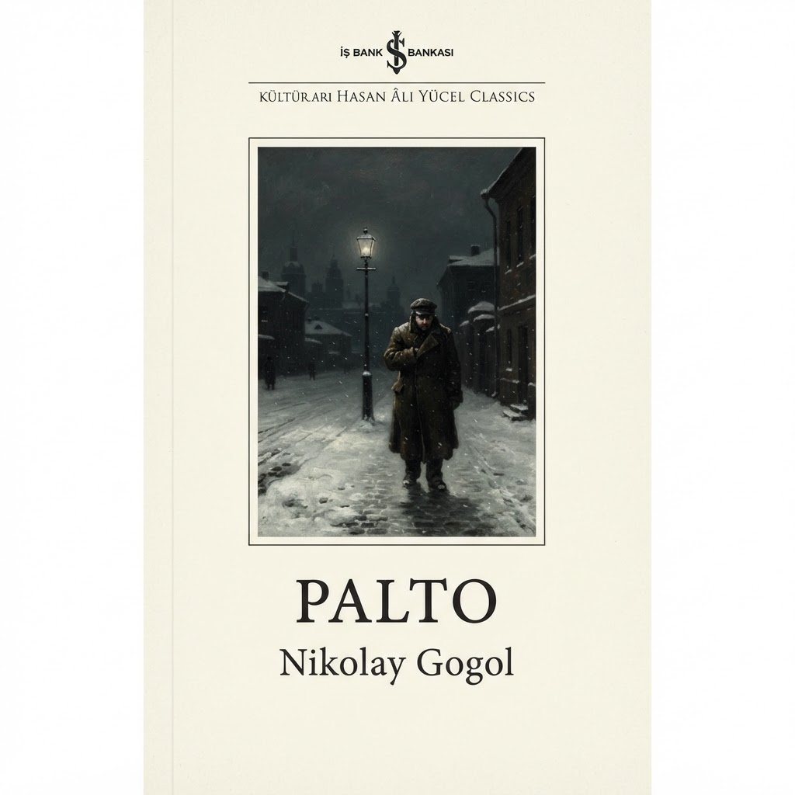
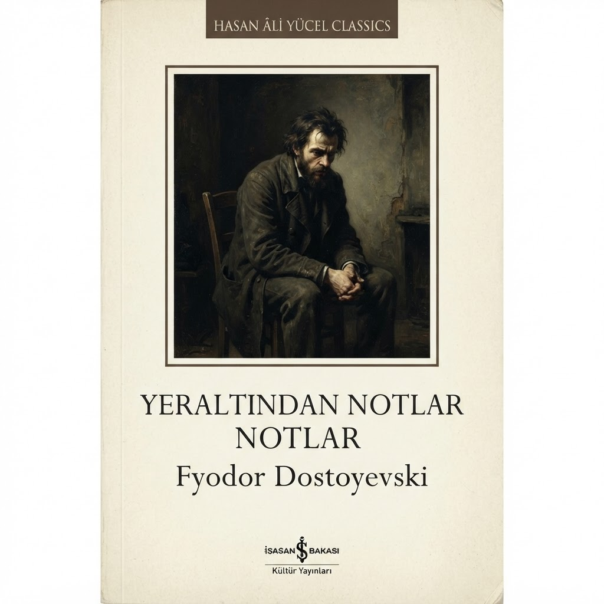
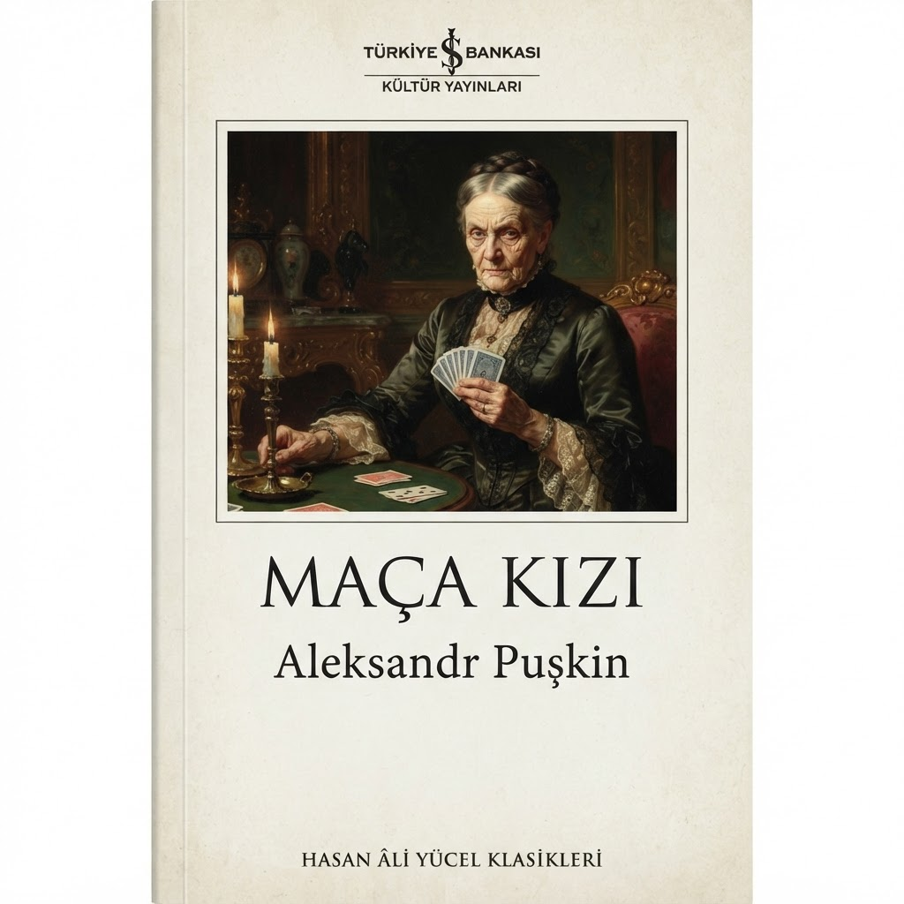
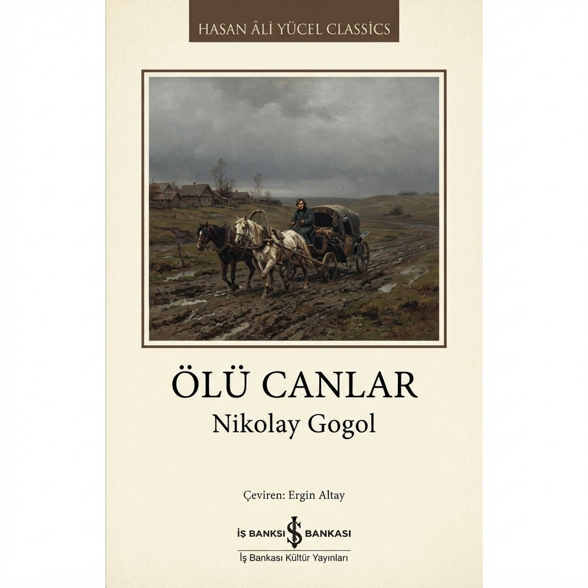
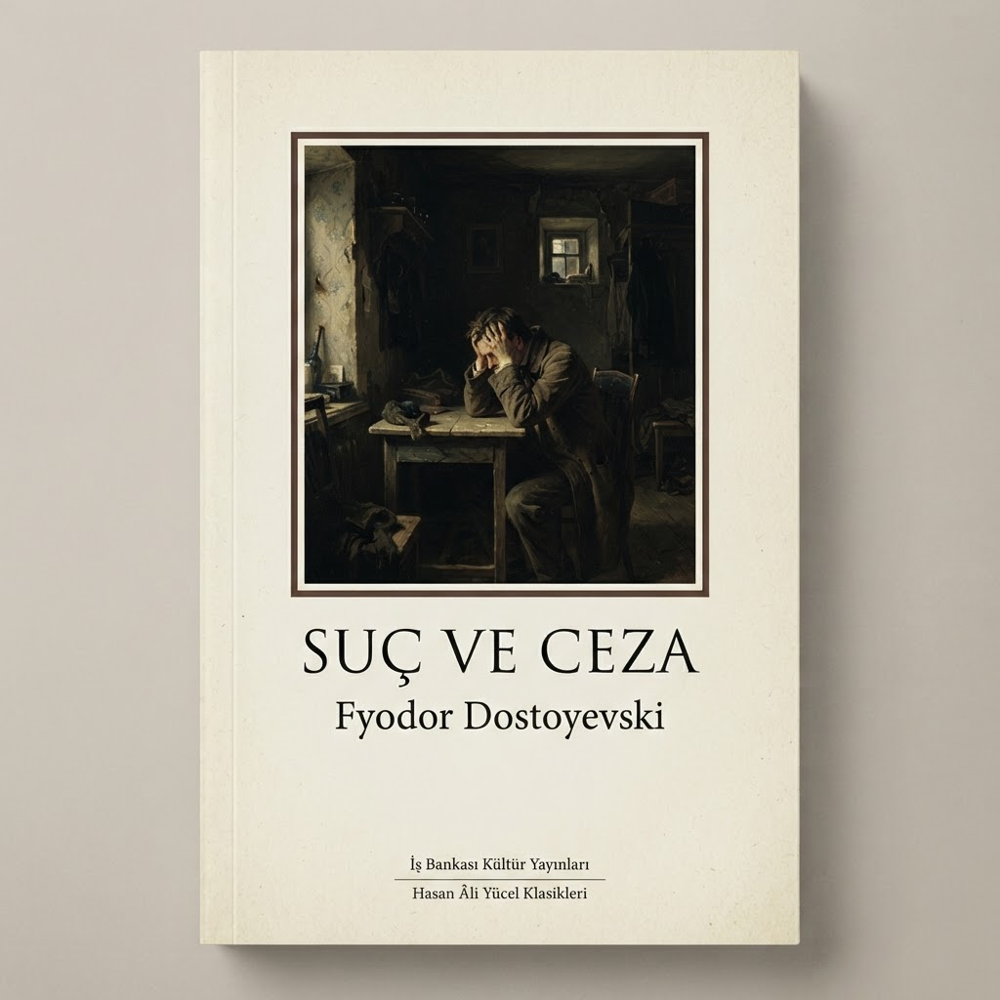

Ölümsüz Eserler
Klasikler
Zamana meydan okuyan, insan doğasının en derin katmanlarına inen Rus edebiyatının başyapıtları. Her biri, edebiyat tarihine yön veren birer dönüm noktası.

Uzun Öykü1842Palto
Nikolay Gogol
Silik bir memurun yeni bir paltoya duyduğu tutku üzerinden bürokrasiyi ve insan onurunu sorgulayan başyapıt.
Detayları Gör
Felsefi Roman1864Yeraltından Notlar
Fyodor Dostoyevski
Toplumdan soyutlanmış bir adamın karanlık iç monologuyla insan iradesini ve bilinci sorgulayan bir başyapıt.
Detayları Gör
Öykü1834Maça Kızı
Aleksandr Puşkin
Kumar tutkusu ve açgözlülüğün pençesindeki bir subayın kaderini doğaüstüyle harmanlayan Rus klasiği.
Detayları Gör
Hiciv Romanı1842Ölü Canlar
Nikolay Gogol
Ölmüş serfleri satın alarak servet peşinde koşan Çiçikov üzerinden Rusya’yı hicveden dev bir yapıt.
Detayları Gör
Psikolojik Roman1866Suç ve Ceza
Fyodor Dostoyevski
Bir cinayetin ardından vicdan, suçluluk ve kefaretle boğuşan Raskolnikov’un psikolojik çöküşü.
Detayları Gör